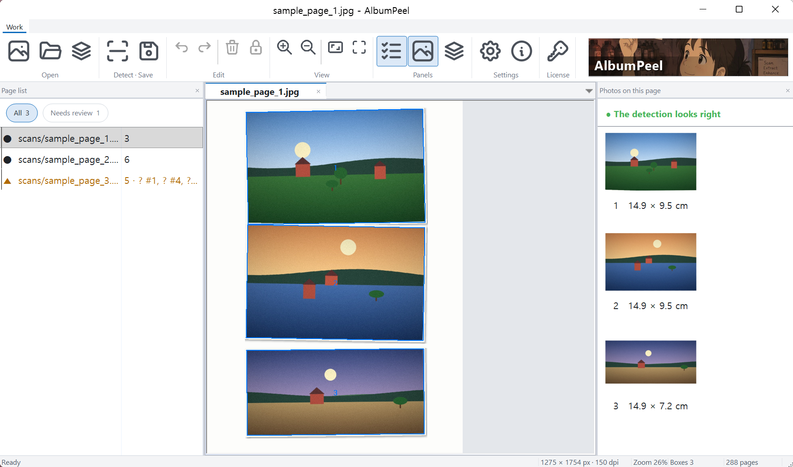
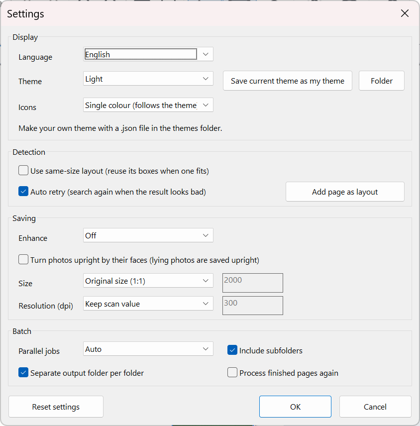

Installation, how to use, batch, preferences, FAQ
name_01.png, name_02.png … By default 1:1 original size and the scan dpi.
If a box is off, drag its corners; draw a new box in an empty area for a missed photo. Delete removes the selected box, the lock icon locks it, Ctrl+Z / Ctrl+Y undo and redo. Your corrections are remembered in a small file next to the scan (name.rects.json); the scan itself is never changed.
Tips: leave a little gap between photos, close the lid flat and scan at 300 dpi or more.
In Batch add files or folders (drag and drop works), choose the output folder and format and press Start: several pages are processed at the same time. You can stop at any time and finished pages are skipped. The output folder gets a batch_report.csv with status, photo count, time and review reason per page; fix only the "needs review" pages and start again to save just those again.

Enhancement and turning upright by faces are both off by default. The status bar shows a progress bar and the current step.
Drag around it in an empty area to draw a box, then fit the corners. If it happens often, leave more gap between photos when scanning.
Check Preferences → Saving → Size is Original size (1:1).
The page is already done or is open in the editor. Turn on "Process finished pages again" or close it in the editor.
No. It only means the result looks unusual; open it and check.
Never. It only reads them.
The program files were modified or the protection was removed. Reinstall the program.
Saving stops but detecting and editing still work. Enter the activation code of a new license to replace it.
XColor International, albumpeel@gmail.com. Please include the PC code and recovery code (License window).